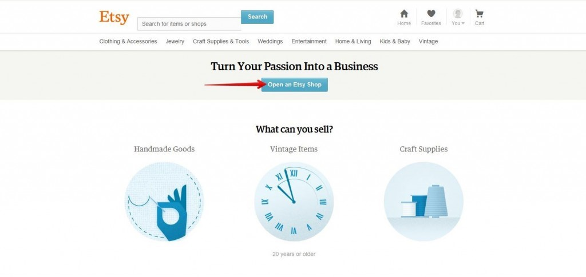
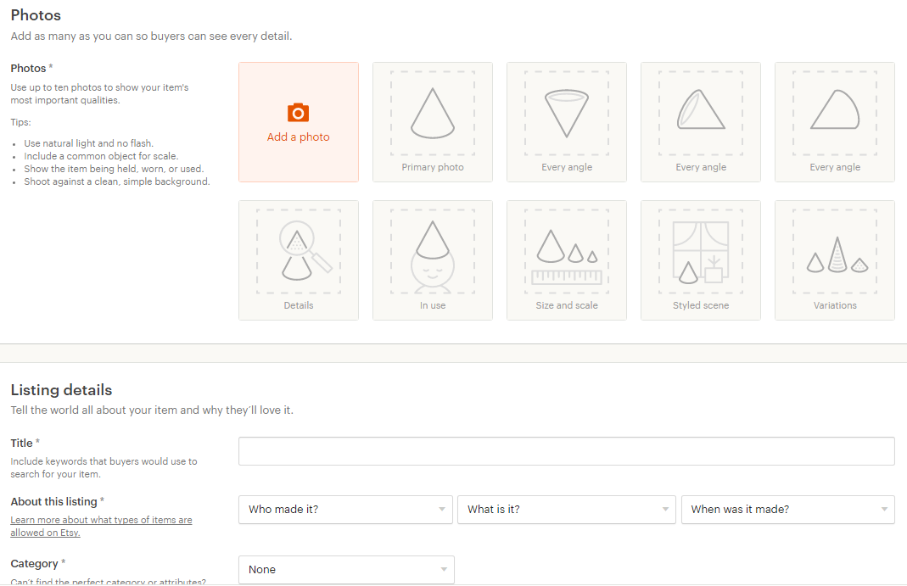
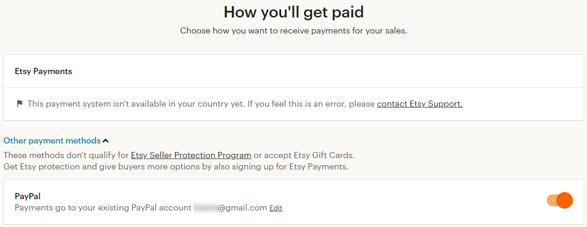
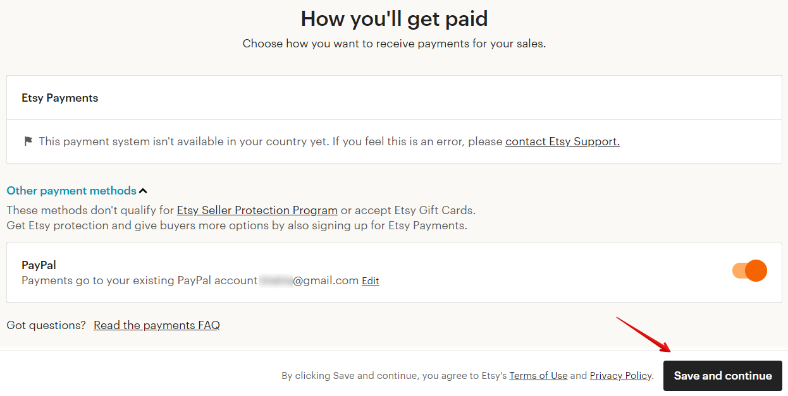

Шаг 2
После того, как вы нажали кнопку Register, вам нужно перейти в свою почту,
найти там письмо от Etsy и подтвердить регистрацию.
Если и через 10 минут никакого письма на почту не пришло, тогда вы можете
запросить новое подтверждение, кликнув на Resend email. Или внести измене-
ния в указанный вами адрес электронной почты, нажав Change your email.

Шаг 3
Открываем магазин, нажав на кнопку Open an Etsy Shop.
Шаг 4
Установите следующие настройки:
• в поле Shop language обязательно поставьте English. Если вы выставите
другой язык, вам впоследствии придётся дублировать всю информацию в
магазине на выбранном языке и дополнительно на английском (для ан-
глоязычной аудитории, которой большинство на Etsy)
• в поле Shop country укажите вашу страну
• в поле Shop currency укажите валюту доллары США (или евро, если вы
живёте в Евросоюзе (Euro))
• выберите подходящую причину для регистрации магазина:
o Это мой основной источник дохода (Selling is my full-time job)
o Это мой дополнительный источник дохода, но я надеюсь сделать
его основным (I sell part-time but hope to sell full-time)
o Я занимаюсь этим в свободное время (I sell part-time and that’s how I
like it)
o Другое (Other)


Шаг 5
После этого введите название вашего магазина. До окончания регистрации вы
можете внести изменения неограниченное число раз. Когда регистрация закон-
чена – изменить название самостоятельно можно до пяти раз. Подробнее в во-
просе «Как придумать название магазину?» и «Как изменить название мага-
зина?».
Если название будет занято, вы увидите ошибку «Not available»:


Шаг 6
Для того, чтобы бонус 40 бесплатных товаров вступил в силу, вам нужно доба-
вить минимум 1 товар в свой магазин.
Переходим к добавлению первого листинга.
Нажмите на +Add a listing.
Шаг 7
Это будет пробный листинг, поэтому важно заполнить только основные поля, со
звёздочками. Не переживайте, вы можете потом внести в него изменения.


Подробнее о том, как добавлять листинг, читайте в разделе 3 «Как добавить
листинг с физическим товаром» или «Как добавить листинг с цифровым това-
ром».
Шаг 8
После того, как товар добавлен, вы увидите фотографию в сетке, как на кар-
тинке ниже.

Сохраните изменения и перейдите к следующему шагу.
Шаг 9
На данном шаге вам нужно установить способ приема платежей:
• Etsy Payments (доступен в некоторых странах)
• PayPal (всё о ПайПал читайте в разделе 2)
Надпись This payment system isn’t available in your country yet. If you feel this is an
error, please contact Etsy Support означает, что в вашей стране не доступен способ
приема платежей Etsy Payments. Подробнее об этой системе читайте в разделе
«Как принимать оплату на Etsy».
Если Etsy Payments вам недоступен, нажмите Other payment methods и укажите
PayPal (передвинув переключатель вправо).
Шаг 10
После того, как вы начнете привязывать свой аккаунт PayPal, у вас откроется
поле для ввода:

Введите имя PayPal аккаунта дважды, в разделах PayPal account email и Confirm
PayPal account email и сохраните изменения.
Если система “зависнет” на этом шаге и кнопка перехода на следующий этап
будет неактивна – попробуйте вернуться на шаг назад (загрузка товаров), а за-
тем снова перейти на этап добавления PayPal.
Если у вас доступен способ приёма оплат Etsy Payments (например, вы живёте
в стране Евросоюза), то вам нужно ввести:
• страну, в которой открыт счёт в банке (Where is your bank located)
• банковские реквизиты, куда Etsy будут выводить деньги (Where should we
deposit your funds)
• фамилию, имя, дату рождения и адрес проживания (Tell us a little bit about
yourself)


Шаг 11
Перейдите к последнему шагу, нажав кнопку Save and continue.
Шаг 12
На данном шаге нужно выбрать при помощи чего вы будете оплачивать комис-
сии Etsy.
Это можно делать с баланса Etsy Payments (если он у вас подключен), с PayPal-
аккаунта (Pay with PayPal) или с банковской карты (Add a credit or debit card).
Выберите тот способ, который вам удобнее.


Etsy спишет с баланса выбранного вами способа 1 доллар, чтобы проверить
возможность оплаты. После этого деньги вернутся обратно на счёт.
Хочу обратить внимание, при размещении одного листинга справа будет
надпись о том, что Etsy включат в будущий счёт $0.20 за размещение товара.
Если вы регистрировали магазин по реферальной (партнёрской) ссылке, тогда
для вас действует бонус 40 бесплатных листингов. И размещение товаров будет
бесплатным. Надпись о 20 центах всё равно будет показываться – просто не
обращайте на неё внимание.
Шаг 13
После того, как вы указали, каким образом будете оплачивать комиссии, завер-
шите регистрацию, нажав кнопку Open your shop.
Шаг 14
Регистрация завершена. Давайте проверим, предоставили ли вам бесплатные
листинги.

Зайдите на страницу Shop Manager — Listings. Справа вверху вы должны уви-
деть кнопку с надписью «+Add a listing 39 free» (если на шаге 8 вы добавили два
или больше товаров, то бесплатных (free) размещений будет меньше 39-ти).
Почему при регистрации по партнёрской ссылке я не полу-
чил(а) бесплатные листинги
По словам Этси, такое возможно по нескольким причинам:
1. Проверьте, что вы прошли процесс регистрации магазина до конца. По-
смотрите, доступен ли вам личный кабинет продавца Shop Manager.
2. После перехода по партнёрской ссылке вы перешли на другую страницу,
и только после этого начали регистрацию.
3. В процессе регистрации вы сменили браузер.
Если вы считаете, что всё сделали верно, то стоит написать в службу поддержки
Etsy. Нередко бывает, что админы признают ошибку системы и начисляют бес-
платные листинги.
Что делать, если сразу после открытия магазин заблокиро-
вали
В последние месяцы участились случаи, когда магазины в течение 1-2 дней по-
сле регистрации блокируют. При этом, никаких разъяснений со стороны Etsy не
приходит.
К сожалению, такое бывает – в том числе из-за того, что блокировки происхо-
дят автоматически и не всегда алгоритм срабатывает верно.
Если с вами случилось подобное, то необходимо написать или позвонить в тех-
поддержку Etsy и описать случившееся.
Очень часто бывает, что площадка признаёт ошибку и разблокирует магазин.